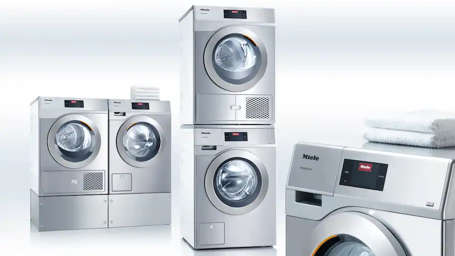
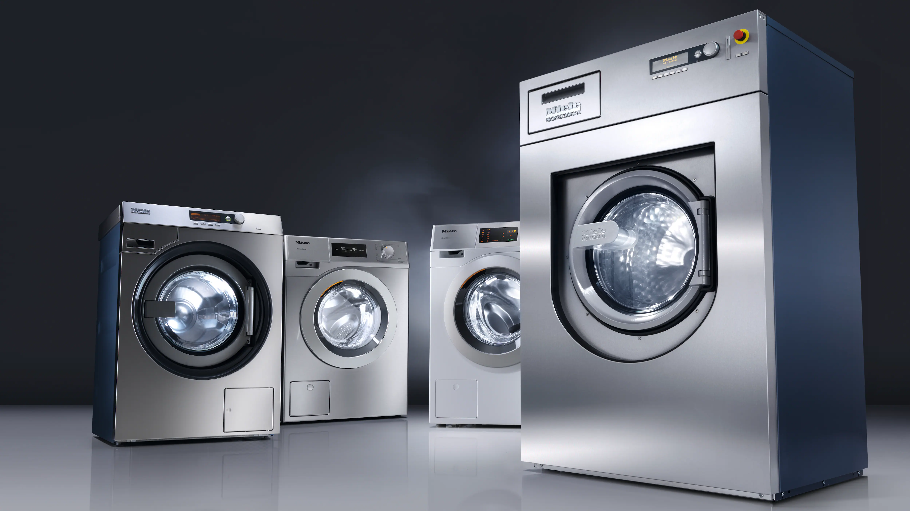
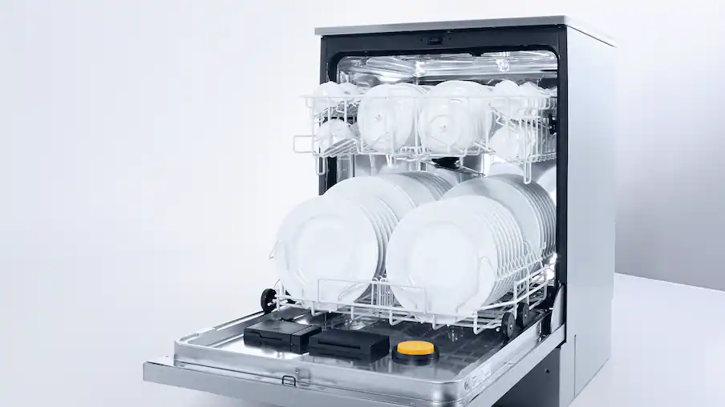
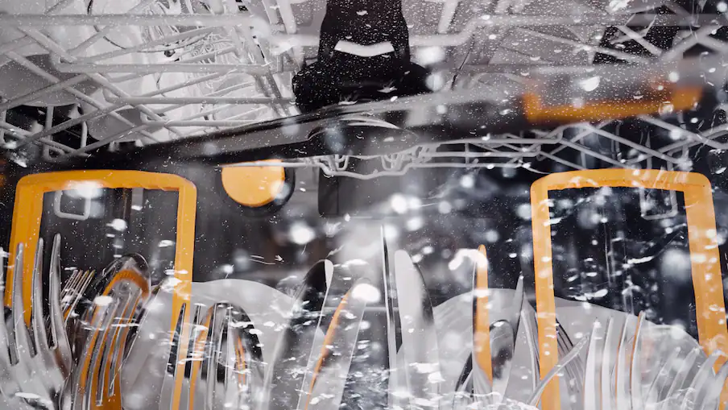

Professionele wasmachines
Voor organisaties die dagelijks betrouwbaar moeten kunnen wassen. We kijken naar capaciteit, gebruiksfrequentie, programma's, aansluiting en plaatsing.


Professionele apparatuur voor organisaties waar dagelijks gebruik, continuïteit en technische betrouwbaarheid tellen. Obbink Service helpt bij keuze, levering, installatie, ingebruikname, onderhoud en service.

PROFESSIONEEL WASSEN, DROGEN EN AFWASSEN
De juiste keuze begint bij de toepassing. Hoe vaak draait de machine, hoeveel capaciteit is nodig, hoe snel moet een programma klaar zijn en wat betekent uitval voor uw organisatie?
Voor organisaties die dagelijks betrouwbaar moeten kunnen wassen. We kijken naar capaciteit, gebruiksfrequentie, programma's, aansluiting en plaatsing.

Professionele was- en droogoplossingen, ook wanneer ruimte, doorlooptijd en continuïteit belangrijke factoren zijn.

Voor omgevingen waar vaat snel, frequent en betrouwbaar verwerkt moet worden. Advies begint bij gebruik, capaciteit en gewenste doorlooptijd.
OBBINK SERVICE ERACHTER
Professioneel witgoed is onderdeel van een bedrijfsproces. Daarom moet ook de technische ondersteuning kloppen.

INNOVATIE & RESULTAAT
Miele Professional vaatwassers zijn ontwikkeld voor snelheid, capaciteit en een betrouwbaar afwasresultaat. Voor horeca, zorg en andere professionele omgevingen kijken we samen welke oplossing het beste past bij het gebruik, de belasting en de gewenste doorlooptijd.

SERVICE & ONDERSTEUNING
Bij professioneel witgoed stopt het niet bij de keuze van het toestel. Obbink Service ondersteunt bij advies, levering, plaatsing, ingebruikname, onderhoud en service. Zo heeft u één aanspreekpunt voor zowel de apparatuur als de continuïteit van uw organisatie.
VOOR ZORG, RECREATIE EN BEDRIJVEN
Vertel ons waar de apparatuur wordt gebruikt, hoe intensief en welke capaciteit u nodig heeft. Dan kijken we samen naar een passende professionele oplossing.